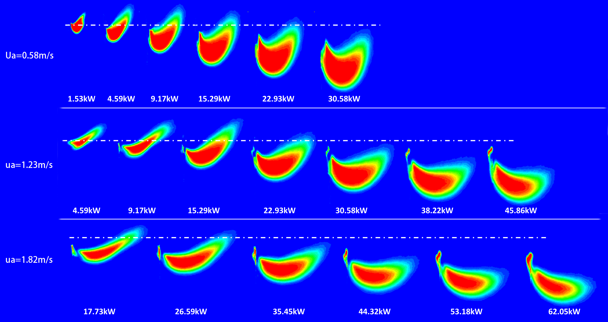

"Michael Delichatsios is recognized for unique contributions in all areas of fire research: pyrolysis, ignition, soot, radiation, spread, turbulence, pool, wind, enclosure, facade fires."

- NEGATIVE FLAME JETS IN WIND -
"The Greek Professor Who Knows How To Put Out Fires"
"People who wish to analyze nature without using mathematics must settle for a reduced understanding."
- Richard Feynman
Esteem
Prizes, Visiting Professorships, Committees.
Gordon Moore Foundation Grantee
Leverhulme Emeritus Scholarship
Combustion Institute Fellow
Adjunct Professor, University of Canterbury, NZ , Fire Research, 2019-
Erskine Fellowship at the Canterbury University, NZ, 2018-2019
Howard Emmons award 11 IAFSS (International Association Fire Safety Science) Symposium, February 2014
Senior Distinguished Research Fellow, University of Ulster, December 2013
Invited lecture for Fire Education in Asia, Japan 2013
Invited lecture and award for career achievements in Modeling Fires by the Spanish fire research organization GIDAI, 2012
Co-chairman of the Fire Colloquium of the 33rd Combustion Institute Symposium in Beijing China, 2010
Visiting Professor at USTC China, 2010-
Best paper by my student at the IAFSS conference in Karlsruhe Germany, 2009
Reviewer in several journals and international conferences - continuous
Advisory Board of the Journal of Fire Safety Science and Technology, 2004-
Visiting Professor at the COE in Fire at the Tokyo University of Science, 2003 –
Co-joint Professor at the University of Newcastle Australia, 2001-
Paper chairman and Editor for the Fifth Asia-Oceania Symposium on Fire Science and Technology, 2001
Chairman of WG8 in ISOTC92 fire safety committee, 2000-2005
Visiting Professor at BRI (Building Research Institute) Japan, 1990, 1993, 2001-
Best paper in The Australian Combustion Institute meeting in Newcastle Australia, 1999
Paper chairman for USA for the Fourth IAFSS meeting, 1995
Visiting Professor at the University of Poitiers, 1992
Visiting Professor at the Technical University of Athens, 1991
Recipient of the first medal of mathematical society of Greece, 1962
Highest mark (57/60) in the entrance examination for the University System in Greece, 1962
Member of CI (Combustion Institute), ASME (American Society of Mechanical Engineers) USA, IAFSS (International Association of Fire Safety Science), SFPE (Society of Fire Protection Engineers) USA, AOFST ( Asian Oceania Association for Fire Safety and Technology), Society for Fire Safety (SFS) Australia
Total for FireSERT: £7 million, Personal research: £2,500,000 and R&D £150,000.
2021: Gordon Moore Foundation contract grant for using liquid nitrogen for fire extinction, $500,000
2019: Leverhulme grant
2016: EENSULATE, Design of fire safe advanced glazing, European community, £300,000
2014: AWE (Atomic Weapons Establishment) Mass fires, £108,000
2014: Royal Engineering Society award, Travel fund, £12,000
2014: FP7 Lightweight construction for fire ELISSA, £350,000
2014: EPSRC high computing facilities 5% of my time
2013: Fire Retardant materials, FRX, £5,000
2014: NFPA USA External Façade fires with CSIRO Australia, £10,000
2010-2014: FP7 project on aircraft safety AICRAFTFIRE, £350,000
2008-2011: Discovery project in cooperation with Prof. Dlugogorski on fire contamination form sugar canes, Australia, £30,000
2010: European project ENFIRO on replacing Brominated Fire Retardants, 400,000 Euros for ULSTER
2006-2009: Discovery Project - Formation of organic pollutants in fires of treated and contaminated wood”, Dlugogorski, Kennedy, Mackie and Delichatsios, Australia, £30,000 (AU$600,000)
2007-2010: EPSRC grant on Façade Fires, £176,000
2005-2010: STREP European project FP6 PREDFIRE, 2,000,000 Euros
2003-2008: ODPM fire safety engineering research, £24,000 per year
2003-2006: Firenet European project, £99,000
2003-2004: FUSION project, £22,000
2003-2004: ARC (Australian Research Council), AU$425,000
Proceedings of The Combustion Institute: publications
YP Lee, MA Delichatsios, GWH Silcock Heat fluxes and flame heights in facades from fires in enclosures of varying geometry, Proceedings of the Combustion Institute 31 (2), 2521-2528, 2007
RA Altenkirch, L Tang, K Sacksteder, S Bhattacharjee, MA Delichatsios, Inherently unsteady flame spread to extinction over thick fuels in microgravity, Symposium (International) on Combustion 27 (2), 2515-2524, 1998
MA Delichatsios, RA Altenkirch, MF Bundy, S Bhattacharjee, L Tang ,Creeping flame spread along fuel cylinders in forced and natural flows and microgravity, Proceedings of the Combustion Institute 28 (2), 2835-2842, 2000
MA Delichatsios, L Orloff, Effects of turbulence on flame radiation from diffusion flames, Symposium (International) on Combustion 22 (1), 1271-1279, 1989
MA Delichatsios, J De Ris, L Orloff, An enhanced flame radiation burner, Symposium (International) on Combustion 24 (1), 1075-1082, 1992,1992
MA Delichatsios, Creeping flame spread: Energy balance and application to practical materials, Symposium (International) on Combustion 26 (1), 1495-1503, 1996
L Hu, X Zhang, MA Delichatsios, L Wu, C Kuang , Pool fire flame base drag behavior with cross flow in a sub-atmospheric pressure , Proceedings of the Combustion Institute 36 (2), 3105-3112, 2017
J Dai, MA Delichatsios, L Yang, J Zhang , Piloted ignition and extinction for solid fuels,Proceedings of the Combustion Institute 34 (2), 2487-2495, 2013
9. J Dai, M Delichatsios, L Yang, Piloted ignition of solid fuels at low ambient pressure and varying igniter location, Proceedings of Combustion Institute 34, 2497-2503,2013
Y Chen, V Motevalli, MA Delichatsios, PA Tatem, Prediction of horizontal flame spread using a theoretical and experimental approach, Symposium (International) on Combustion 27 (2), 2797-2805, 1998
X Zhang, L Hu, MA Delichatsios, J Zhang, Experimental study and analysis on flame lengths induced by wall-attached fire impinging upon an inclined ceiling, Proceedings of the Combustion Institute 37 (3), 3879-3887, 2019
12. D Jiakun, MA Delichatsios, Y Lizhong, Piloted ignition of solid fuels at low ambient pressure and varying igniter location, Proceedings of the Combustion Institute 34 (2), 2497-2503, 2013
Combustion and Flame: publications
MA Delichatsios, Transition from momentum to buoyancy-controlled turbulent jet diffusion flames and flame height relationships, Combustion and Flame 92 (4), 349-364, 1993
MA Delichatsios, Air entrainment into buoyant jet flames and pool fires ,Combustion and Flame 70 (1), 33-46, 1987
MA Delichatsios, TH Panagiotou, F Kiley,The use of time to ignition data for characterizing the thermal inertia and the minimum (critical) heat flux for ignition or pyrolysis, Combustion and Flame 84 (3-4), 323-332, 1991
L Hu, K Lu, M Delichatsios, L He, F Tang, An experimental investigation and statistical characterization of intermittent flame ejecting behavior of enclosure fires with an opening, Combustion and Flame 159 (3), 1178-1184, 2012
MA Delichatsios, Y Chen , Asymptotic, approximate, and numerical solutions for the heatup and pyrolysis of materials including reradiation losses, Combustion and Flame 92 (3), 292-307, 1993
T Beji, JP Zhang, W Yao, M Delichatsios ,A novel soot model for fires: validation in a laminar non-premixed flame, Combustion and Flame 158 (2), 281-290, 2011
MA Delichatsios ,Relation of opposed flow (creeping) flame spread with extinction/ignition, Combustion and flame 135 (4), 441-447, 2003
R Khatami, YA Levendis, MA Delichatsios, Soot loading, temperature and size of single coal particle envelope flames in conventional-and oxy-combustion conditions (O2/N2 and O2/CO2), Combustion and Flame 162 (6), 2508-2517, 2015
L Orloff, J De Ris, MA Delichatsios, Chemical effects on molecular species concentrations in turbulent fires, Combustion and flame 69 (3), 273-289, 1987
Y Chen, MA Delichatsios, Creeping flame spread: Some new results and interpretation for material flammability characterization, Combustion and flame 99 (3-4), 601-609, 1994
F Ren, L Hu, X Zhang, X Sun, J Zhang, M Delichatsios, Experimental study of transitional behavior of fully developed under-ventilated compartment fire and associated facade flame height evolution, Combustion and Flame 208, 235-245, 2019
F Nmira, JL Consalvi, MA Delichatsios, Radiant fraction from sooting jet fires , Combustion and Flame 208, 51-62, 2019
Q Wang, L Hu, SH Yoon, S Lu, M Delichatsios, SH Chung, Blow-out limits of nonpremixed turbulent jet flames in a cross flow at atmospheric and sub-atmospheric pressures, Combustion and Flame 162 (10), 3562-3568, 2015
Other Journals
CST: 15
IAFSS :33
Fuel: 4
Fire Safety Journal: 28
International Heat and Mass Transfer: 4
Fire Materials and other: 15
International Symposia on Combustion and other meetings
Presented at the 33, 34, 35 ,36 ,37,38
Presented at the Mediterranean Symposium on Combustion,2013,2015 ,2018
Eastern Section of the combustion Institute, USA, 1978-1995
Co-chairman of the Fire Colloquium of the 33rd Combustion Institute Symposium, 2010 in Beijing China
“Method of Apparatus for Continuous Flow Flocculation and Clarification” U.S. Patent Application, Serial No. 446.666. Filed February 28, 1979 (with R.F. Probstein).
“An Industrial Gas Burner with Enhanced Radiant Output” Patent Disclosure, January 1988, US Patent 5248252 1993 (with J. deRis and G.H. Markstein).
Ph.D. in Mechanical Engineering, Massachusetts Institute of Technology (MIT), Ph.D. Thesis “Turbulent Coagulation in Turbulent Flows with Application to Wastewater Treatment”, 1976
Ms in Mechanical Engineering, Massachusetts Institute of Technology (MIT), Master Thesis: “Oil Booms in Rough Seas”, 1971
Diploma In Mechanical Engineering, National University of Athens, 1967